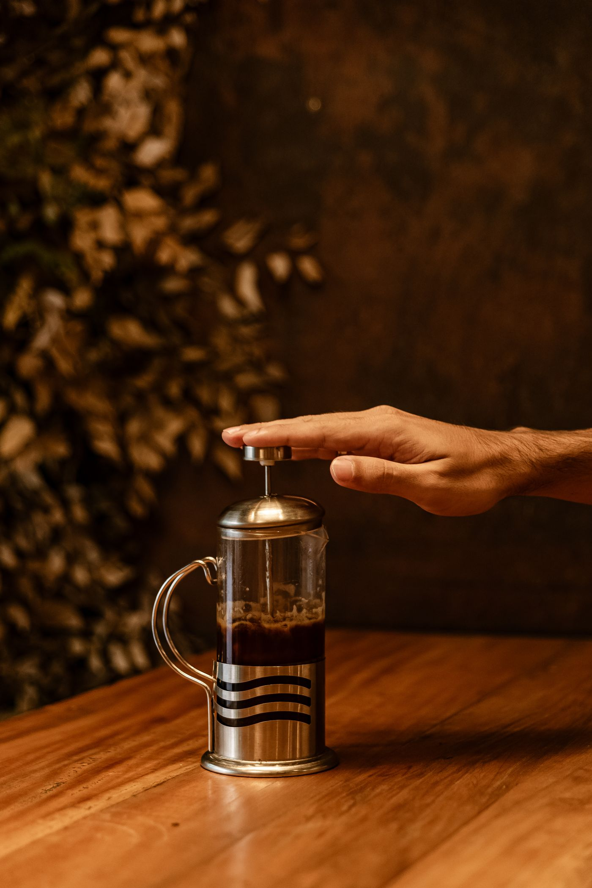

Five ways to make a great cup
The right method depends on the coffee, the day, and what you're in the mood for. Here's what each one brings to the cup.

Espresso
Finely-ground coffee is compressed and forced through with hot water under high pressure, producing a small, concentrated shot topped with crema. It's the base for most drinks on our menu.

V60
A cone-shaped dripper and paper filter let water pass through coffee grounds slowly and evenly. The result is clean, aromatic, and shows off delicate, high-toned flavours beautifully.
Chemex
An hourglass carafe and thick proprietary filter produce an exceptionally clean, smooth cup with heavier sediment and oils filtered out. Brewed to share, and worth the wait.

Aeropress
Coffee steeps briefly before being pressed through a filter with gentle pressure. Fast, forgiving and endlessly adjustable — it can taste like a light filter cup or a small, punchy espresso alternative.

French Press
Coarse grounds steep fully immersed in hot water before being separated with a metal mesh plunger. No paper filter means more body and natural oils make it into the cup.
Join a home brewing workshop
We run hands-on sessions covering V60, Aeropress and Chemex so you can brew like this at home too.